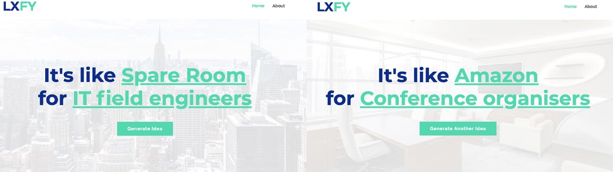

Like X, For Y (LXFY)
Very much a work in progress, the current version of this project can be found at LikeXForY.com.
Whilst much more of a development project, LXFY came from my personal desire to be able to find some personal projects to add to my portfolio as a way to practice other UX design techniques or methodologies.
I mapped out the process of bringing together a side-project, making sure that I'd need to also factor in available time & motivation as this was to be something I'd be working on in my own time.
Worryingly, the part of the process that stood out as being the biggest blocker to progress was right at the beginning, when trying to find a problem to solve/idea to work on. I thought to myself 'I'm not an entrepreneur, I don't have an idea for an app that I want to build', so what can I do?
I read a lot of articles about UX/UI portfolios, it became clear that a number of newer designers were seeking out ideas for projects to add. It is difficult to build a portfolio when you haven't got one to get you projects to work on in the first place.
A few scribbles in my notepad, a quick refresher on some simple JavaScript and I had the beginnings of what I'd hoped for. A fairly quick and easy way to generate ideas for UX or UI projects.
People often describe a business/idea by referencing another that people already know, 'It's like AirBnB for Weddings'. I remembered this being mentioned in the book UX Strategy, by Jaime Levy, and thought that that was a fast way to find ideas to work on.
After some searching online, I found that YouGov maintain a list of the most popular digital services in the UK and that the National Careers Service has a list of Careers/Job Titles.
Bringing together data from both of these lists and presenting it back in a randomised pairing has the effect of producing a potential project idea.
It's like Amazon for Conference Organizers
It's like Slack for Digital Marketers
It's like Basecamp for Debt Counsellors
Some of the ideas that come out of the process are nonsense, others however have some potential and that is what I wanted to achieve with this project - Potential.
Any pairing could be investigated in a number of different ways - growing into projects to furthe explore a whole range of UX / UI options.
LikeXForY.com, generate an idea of your own and see where your explorations take it.